Vanderbilt · Learning Series · ATD facilitator guide · print edition
Across Your Week, the facilitator guide

Run of show
| Screen | Full (min) | Core (min) |
|---|---|---|
| Welcome / QR | 3 | 2 |
| Objectives | 2 | 1 |
| The Chancellor's charge | 3 | <1 |
| Agenda | 1 | skip |
| 01 · The breadth effect | 9 | 6 |
| Manifesto | 1 | skip |
| 02 · The inventory | 12 | 8 |
| 03 · The method match | 12 | 9 |
| 04 · The stack | 11 | 7 |
| 05 · The Week Lab | 14 | 10 |
| 06 · Bank the time | 10 | 6 |
| Recap quiz | 4 | 4 |
| Capstone · My Week Map | 6 | 6 |
| Glossary | 1 | skip |
| Closing · commitment | 4 | 1 |
| Total | 93 | 60 |
Audience
Vanderbilt staff who have taken at least one or two AI-enabled Education Series courses and want the pieces to add up: coordinators, analysts, managers, anyone whose week runs on recurring blocks. 8 to 24 works best (the inventory and matching drills run in pairs); scales larger with room votes. The traffic-light data rule from the AI courses is assumed and restated here.
Room setup
Projector plus presenter device; learners on their own devices via the Welcome-slide QR; movable seating for pairs. Ask learners to have last week's calendar reachable on their device; the inventory drill works best against the real thing. Virtual: breakouts of 2 for the inventory and matching swaps. Set the norm in the first minute: blocks and workflows, never people's names, and nothing typed is saved or sent.
Materials
- Projector or large display and the facilitator link open (this edition)
- Facilitator laptop with arrow keys or clicker; all notifications off
- Learner devices (BYOD) joining via the welcome-slide QR, with last week's calendar reachable
- A few printed cheat sheets (cheatsheet.html) for anyone without a device
- Printed Week Maps (worksheet.html) as the no-device and projector-failure fallback
- Whiteboard or flip chart with markers for the toolbox sketch and the bank lines
- Sticky notes or index cards for the pair inventory swap (one block per note works well)
A week before
- Read this guide end to end, then run BOTH editions start to finish, doing every exercise, including inventorying your own real week honestly. You will be asked what your first stack is; a real answer plays far better than a hypothetical.
- Build your own Week Map in the capstone for a week you genuinely run. You'll show the structure, never the contents.
- Send the pre-work invite (template on this page) with the calendar invite: skim last week's calendar and arrive knowing your three biggest recurring blocks, held privately.
- Decide your path now: Full (90-minute slot) or Core (60). Mark which pair drills you keep versus run solo.
- Skim the current Gallup workplace AI research so the findings in Guess the Number are fresh; the game's reveals carry the framing, but you should be able to say 'the survey' with a straight face.
- Know which series method courses your room has taken (ask in the invite if needed); section 03 lands differently when you can say 'most of you have the Minutes course already.'
The day before
- Test the projector with the facilitator link; confirm the notes rail is readable from where you'll stand.
- Scan the welcome QR from the back of the room with your own phone; it must land on the learner edition.
- Run one full round of the Week Lab and one trainer so you can drive them without looking.
- Print 5 to 10 cheat sheets and Week Maps, and stock the sticky notes.
- Re-read the tough-questions bank; say the 'is this just more work about my work?' response out loud once. That question is coming.
30 minutes before
- Welcome slide up as people arrive; it does the enrolling for you.
- Close every other tab and app; silence the machine.
- Test arrow-key navigation and one interaction (run a Guess the Number round, open the lab).
- Write 'BLOCKS AND WORKFLOWS, NEVER NAMES' where the room can see it all session.
- Draw the toolbox skeleton on the whiteboard: seven method names with room for a verb next to each; you'll fill the verbs live in section 03.
When things go sideways
If Projector or the site fails mid-session: Teach from the whiteboard: the toolbox with its verbs, the four Week Map steps, and the weakest-verify law all draw in seconds. The inventory and matching drills never needed a screen; the capstone moves to the printed Week Map. The lab becomes a group walk-through: read each block's three options aloud and have the room vote.
If Learner devices can't join (wifi or filters): Run facilitator-only: the trainers play well on the projector with the room voting A/B/C by hands; the private inventory and capstone move to paper. You lose typing, not learning.
If You're 10+ minutes behind by the Week Lab (05): Declare the Core path silently: pair drills become solo passes, debriefs shrink to one voice, and the closing tightens to the fist-to-five plus commitment round. Never cut the lab, the inventory, or the capstone; they carry the session's practice objectives.
If Someone names a colleague or turns a block into a complaint about a person: Protect the norm warmly: 'Hold that. Blocks and workflows, never names. The map works on the week's shape, not on people.' If it keeps happening, it usually means a real workload frustration is in the room; acknowledge it, point at the bank section as the honest answer, and move the person to a private follow-up.
If The room has uneven AI-enabled Education Series coverage: some have taken four courses, some only Start Smarter: Name it as the design, not a problem: the toolbox slide is deliberately self-contained, each card carrying the method's one-line move and its check. Pair broad users with narrow ones in the swaps; teaching a method's one-liner to a partner is the fastest review there is. Point everyone at the Course Library for the courses they're missing, and say plainly that a Week Map built from two methods is a real Week Map.
If The room is skeptical: 'AI is overhyped, this will blow over': Don't argue futures; play Guess the Number and let the pattern speak. The frame that lands: whatever you think of the hype, the data says the people getting real gains are the ones running many small assists with checks, which is just disciplined work design. Breadth with verification is the low-hype position in the whole debate.
If The room is the opposite: enthusiasts who want to automate the whole week today: Aim the enthusiasm at the checks: 'Great, you're the seven-plus users in the making.' Then hold the line on the weakest-verify law; the lab's auto-reply option and the mid-tier outcome usually do the sobering for you. Enthusiasts lose their week-four story through unchecked chains and unnamed savings, and the bank section is written for exactly them.
If Someone raises a real data-privacy concern mid-flight: Stop and honor it; this is the one interruption that outranks the agenda. Restate the traffic light (green public, yellow internal in approved VU tools only, red private information about people, never), confirm their case against it, and if it's genuinely ambiguous, park it with a promise to route it to the right owner rather than improvising policy from the front of the room.
Tough questions, ready answers
Q: Isn't this just more work about my work? Now I have a map to maintain on top of everything else.
The map is 30 minutes once, and then it lives inside the calendar you already keep. Compare that against what it replaces: the heaviest block on most people's inventory costs three or four hours every single week. The honest version of the trade is 30 minutes of design for hours of recurring return, and if a map ever costs more than it saves, the method says to shrink it. Five blocks, one stack, one bank line is the whole maintenance burden.
Q: I barely have time to do my job. When exactly do I learn seven methods?
You don't, and the course says so explicitly. You need the two or three methods whose verbs dominate your inventory, and you already have at least one from the AI-enabled Education Series course that brought you here. The seven-plus finding is about distinct uses, and one method covers several: the drafts method alone can run your status update, your inbox replies, and your announcement. Start with what you have, let the map tell you which course to take next, and take it when the map reaches for it.
Q: Is the seven-plus number magic? Do I fail if I only get to four?
Not magic, and no. The research point is directional: gains scale with breadth, and the doubling shows up when use spreads across many distinct tasks. Four well-checked assists beat zero and beat one, every time. The Week Map asks for five because five is reachable in one calendar pass without heroics. What actually matters is the slope: more distinct uses this month than last, each with its check, each with its savings named.
Q: My manager will see AI on my calendar and think I'm cutting corners. How do I explain this?
With the bank line, which exists for exactly this conversation: 'these assists saved me this much, the checks caught these issues, and the time went here.' That sentence shows more diligence than silence ever could, because it names the verification as well as the savings. And the traffic light is your policy backstop: everything on your map runs in approved tools with checks attached. If anything, a mapped, checked, reported practice is the opposite of corner-cutting, and most managers recognize that within one report.
Q: What about hallucinations? If AI makes things up, isn't stringing methods together stringing errors together?
That risk is real, and it's why the weakest-verify law sits at the center of the stack section. Every method carries its own check: figures traced to the source file, decisions read against your own notes, claims followed to the policy page. A chain without checks does compound errors, which is exactly why the course forbids it. A chain with a check at every link is safer than most manual workflows, because manual work rarely gets systematically verified at all.
Q: If everyone saves five hours a week, won't leadership just expect more output from the same people?
That pressure exists with or without AI, and invisible savings feed it worst: time nobody named gets reabsorbed with no credit and no say. The bank is the counter-move available at the individual level: name the destination, put it on the calendar, and report what the time bought, whether that's the backlog project or leaving on time. And be straight about limits: no course can promise what an organization decides about workloads. What the bank does is make sure the gain is visible and owned rather than silently absorbed, which is the strongest position an individual can hold in that conversation.
Q: My week is unpredictable; I don't have recurring blocks. Does this still work?
Almost every unpredictable week still has recurring shapes: the inbox is daily, the debrief follows every event, the request that arrives shaped like the last hundred. The inventory just looks one level deeper: instead of 'Tuesday 9 am report,' the block is 'whenever a request lands, I write the same kind of reply.' Methods attach to those shapes exactly as well. And if your week genuinely has no repetition at all, the answers and decisions methods still travel with you, because questions and choices show up in any week.
Copy-paste templates
Pre-work invite (paste into the calendar invite)
Subject: Before our Across Your Week session. One thing to do: spend two minutes with last week's calendar and sent folder, and arrive knowing your three biggest recurring blocks of work, the things that happen every week and eat real hours. You will never be asked to name people; every exercise runs on blocks and workflows, and everything you type stays on your screen. If you remember which AI-enabled Education Series courses you've taken, bring that too. That's it, no reading, no tools to install.
7-day pulse (send one week after)
Subject: One week later, did the calendar pass happen? Three quick lines, reply whenever: 1) Did you run the 30-minute calendar pass from your Week Map? 2) How many assists are placed on next week's blocks, and which one ran first? 3) Where is your bank block, and what is it named? Replies come to me only. Not yet? The map still works; this note is your nudge.
30-day re-poll (send a month after)
Subject: Thirty days of the Week Map. Two questions, same scale as the room: 1) Fist to five, how confident are you now running AI across your week with checks? 2) How many distinct AI uses did you run last week, and what did the banked time buy? Reply with a number and a line. The before-and-after pair is how we know this session did more than feel good.
After the session
Seven days out, send the pulse: 'Did the 30-minute calendar pass happen? How many assists are placed on next week's blocks? Where is the bank block, and what is it named?' At 30 days, send the re-poll: the same fist-to-five confidence question from the close, plus 'how many distinct AI uses did you run last week, and what did the banked time buy?' The count of calendar passes actually run, and the growth in distinct-use counts, are the program's headline Level 3 metrics.
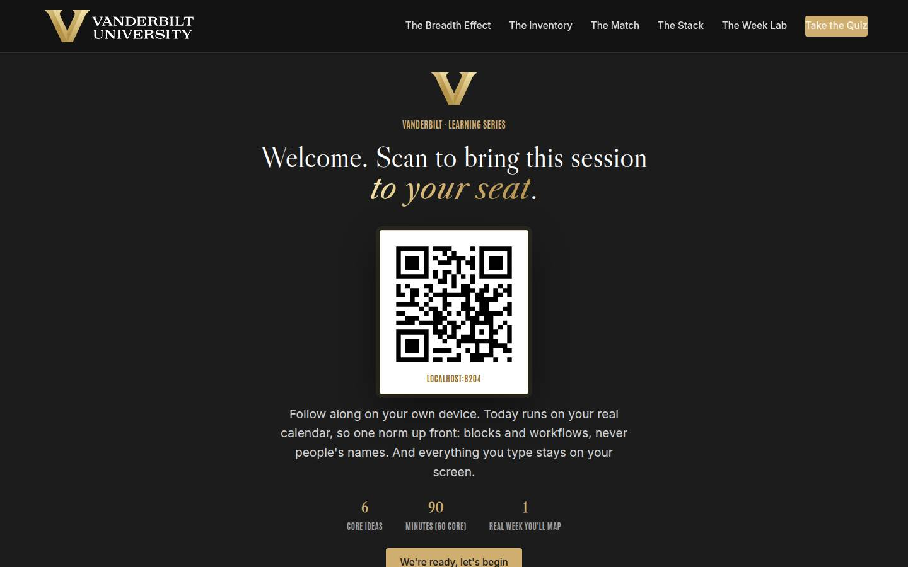
Welcome / QR Full 3 min · Core 2
Get every learner into the experience on their own device and set the norm that makes real-calendar material safe: blocks and workflows, never names, and nothing typed leaves the screen.
Say
“Welcome. Point your camera at that code before we start. Today is the course that makes the other AI-enabled Education Series courses add up. You've each learned a method or two; the research says the payoff comes when several of them run across one week, and that's what we build today: your actual week, mapped. So one ground rule for the next ninety minutes: blocks and workflows, never people's names. And everything you type today stays on your screen; nothing is saved or sent anywhere.”
Do
- Have this slide projected as people arrive.
- Point at the QR and get phones up before you say anything else.
- Set the norm explicitly and early: blocks and workflows, never people's names; typed exercises stay on their screens.
- Confirm by show of hands that most of the room has the site open before advancing.
Ask
“Quick calibration, shout it out: how many distinct tasks did you use AI for last month? Not how often, how many different kinds.”
Expect:
- Lots of ones and twos
- A few threes and fours from the multi-course veterans
- Somebody jokes 'does asking it twice count as two?'
Respond: Take the joke and use it: 'Same task twice counts once, and that question is the whole session. By the end, everyone in this room will have a map that grows that number on purpose.'
Validate: 80%+ of the room has the deck open on a device; the room can repeat the 'blocks and workflows, never names' norm back to you.
Watch for: Learners expecting a tools demo or a new-model showcase. The frame that resets them: today adds zero new tools; it takes the methods you already have and places them across a real week.
Transition: “Here's exactly what you'll walk out able to do.”
Core path: Core: one scan prompt, the norm stated once, move on.
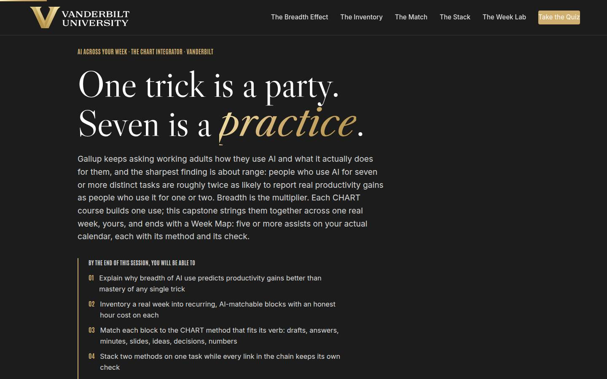
Objectives Full 2 min · Core 1
Set the contract: five capabilities, ending in one real Week Map with a dated calendar pass and a named bank.
Say
“Five things by the end: you'll know why breadth of use, more distinct tasks, predicts real gains better than mastering any single trick. You'll inventory your real week into blocks with honest hours on them. You'll match each block to the method from this series that fits its verb. You'll stack two methods on one task without losing the checks. And it all lands in one artifact: a Week Map for the week you actually live, with a date on the calendar pass that places the assists.”
Do
- Read the five objectives briskly, in plain language.
- Land on the last one: this session ends with a REAL Week Map, five assists, one stack, one date.
- Name the sources once for credibility: Gallup's workplace AI research for the breadth finding, and the method from this series as the toolbox.
Validate: Learners can say what the capstone will be (five blocks, one stack, one dated calendar pass with a named bank).
Watch for: Method questions arriving early ('wait, what's the numbers method?'). Park them gently: the whole toolbox gets one slide in section 03, with a one-line move and check for every method.
Transition: “One page before the plan: why the university needs your week, specifically, to get wider.”
Core path: Core: objectives 1 and 5 out loud; the rest on screen.
The Chancellor's charge Full 3 min · Core <1
Connect the vision to the capstone: breadth of AI use across ordinary staff weeks is where the university's uncommon speed actually comes from.
Say
“Before the plan, the institutional why. Chancellor Diermeier's vision is one sentence with no hedge in it: Vanderbilt will define the great university of the 21st Century and be it. The how is uncommon speed, agility, and scale, and none of those live in a strategy document. They live in weeks, yours included. Gallup's breadth finding is the bridge: seven or more tasks is where the real gains appear, and real gains across thousands of staff weeks is what speed at scale actually is. Our motto is the dare, Crescere aude, dare to grow, and this week, the one on your calendar right now, is where the growing happens.”
Do
- Read the vision sentence off the slide, slowly; it carries the page.
- Walk the three focus cards, landing on the 'At your desk' line in each.
- Point at the flywheel card: every banked hour on a Week Map is capacity the flywheel gets to spend.
- Keep it under three minutes; this page frames the session, and the sections do the teaching.
Validate: The room can say the bridge in one line: the university's speed is built out of individual weeks like theirs.
Watch for: Eye-rolls at strategy language. Ground it fast: the flywheel's inputs are decided in ordinary calendars, one recovered hour at a time.
Transition: “One week, six moves, in a deliberate order.”
Core path: Core: under a minute. Read the vision sentence, gesture at the three focus cards, move on.
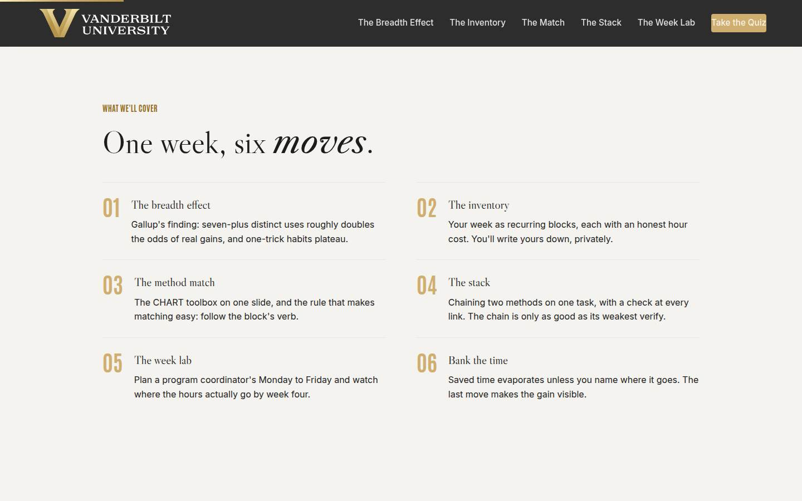
Agenda Full 1 min · Core skip
Show the arc once so learners can place each tool as it arrives: evidence, inventory, match, stack, practice, bank.
Say
“The arc is simple: first the evidence for breadth, then learning to see your week as blocks, then the whole AI-enabled Education Series toolbox on one slide with the matching rule, then the stack, two methods chained on one task. Then you'll plan a coordinator's real week in the lab and finish with the move almost everyone skips: banking the saved time so it doesn't evaporate.”
Do
- Walk the six items in one breath each.
- Point out the shape: the case (01), seeing the week (02), the toolbox (03), the power move (04), practicing it all (05), and protecting the gains (06).
Validate: None needed; this is orientation.
Watch for: Don't teach here; every concept has its own slide.
Transition: “Start with the evidence, because most of us have been optimizing exactly the wrong thing.”
Core path: Core: skip entirely; the deck's structure carries it.
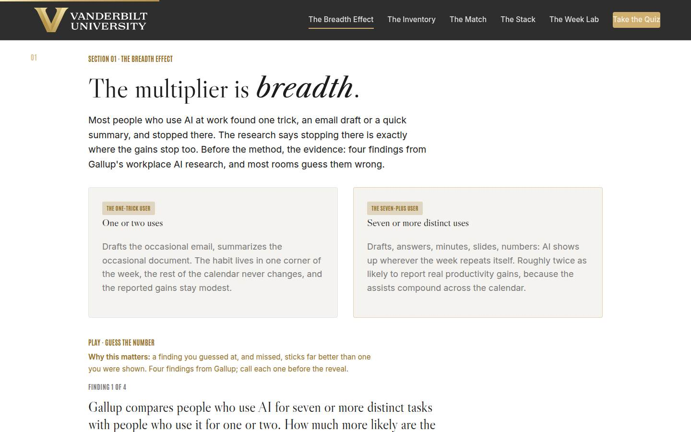
01 · The breadth effect Full 9 min · Core 6
Establish with guessed-at, missed findings that breadth of AI use, not depth in one trick, predicts real productivity gains, and that the plateau at one or two uses is the norm this session breaks.
Say
“Before any method, the evidence, and I want you to guess. Gallup has been asking working adults how they use AI and what it does for them. The sharpest finding is not about which tool or which prompt. It's about range: people who use AI for seven or more distinct tasks are roughly twice as likely to report real productivity gains as people who use it for one or two. And most users are parked at one or two. Four findings, call your answer before each reveal.”
Do
- Frame the game: four findings from Gallup's workplace AI research, guess each before it's revealed. Missed guesses are the point; they stick.
- Run Guess the Number on devices, or as a room vote on the projector; call for guesses out loud before each reveal.
- After the reveal round, walk the two cards: the one-trick user and the seven-plus user, and name the plateau mechanic: one use saves minutes in one corner, so the gain never feels real and the habit never grows.
- Run the quick check (breadth and frequency as the predictor), then the count-your-uses activity from Go deeper: private count, then hands by range.
- Connect the room's shape to the data out loud: most hands at one or two IS the plateau, sitting right here.
Ask
“Be honest with yourselves on the count you just did: what stopped you at the number you're at? What kept trick number three from happening?”
Expect:
- Never occurred to me; I found one thing that works and stopped
- Tried a second use once, it went badly, retreated to the safe one
- No time to experiment during a real week
Respond: Name the pattern warmly: 'All three answers are habit answers, not capability answers. Nobody here lacks the skill; the week just never got designed. That is literally the rest of today.'
Debrief: Breadth is the multiplier and the plateau is the default. Which means the question worth the next eighty minutes is not 'how do I get better at my trick' but 'where in my week would six more assists even go.'
Validate: Quick check correct; the hands-by-range count lands visibly and the room sees its own plateau.
Watch for: A methodology skeptic litigating survey design. Don't defend a single decimal; the case is the convergence: gains track breadth and frequency across the research, and the qualitative claim survives any reasonable error bar. Park deep methodology questions.
Transition: “One sentence before the map. Ten words that explain the plateau.”
Core path: Core: Guess the Number as a fast room vote, quick check stays, the use-count becomes one show of hands with no pair exchange.
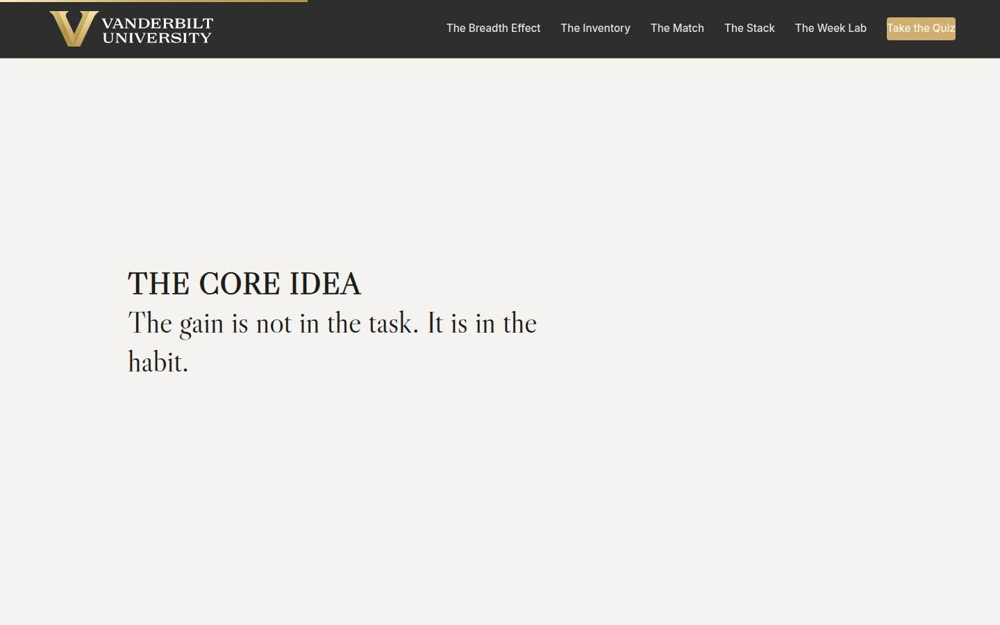
Manifesto Full 1 min · Core skip
One beat of stillness to lock the session's core idea before the method arrives.
Say
“The gain is not in the task. It is in the habit.”
Do
- Let the line animate word by word. Say nothing until it finishes.
- Read it once, slowly, then advance.
Validate: None; this is pacing.
Watch for: The urge to talk over it. Don't.
Transition: “And a habit needs a place to live. Yours lives in a week you've probably never looked at directly.”
Core path: Core: skip; say the line yourself as you pass it.
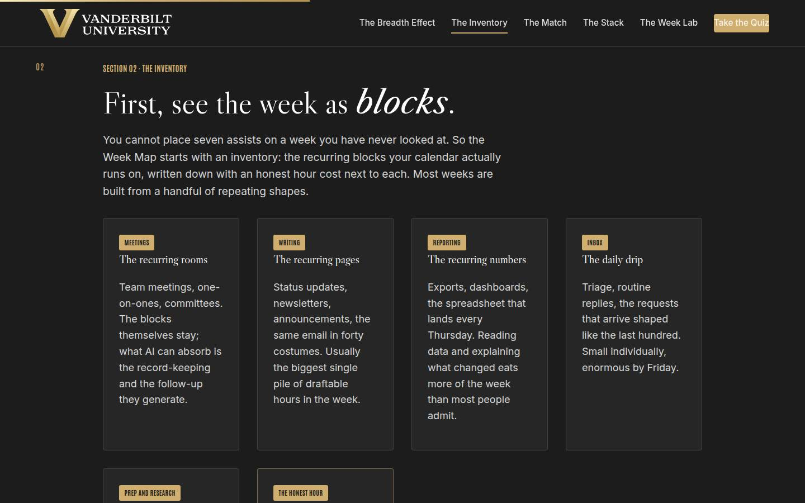
02 · The inventory Full 12 min · Core 8
Teach learners to see their week as recurring blocks with honest hour costs, restate the traffic light as the boundary, and get every learner three real, privately written blocks that the rest of the session operates on.
Say
“You cannot place seven assists on a week you've never looked at, so the map starts with an inventory. Your week is already a list: recurring meetings, recurring pages, recurring numbers, the daily inbox, the looking-things-up hours. In a minute you'll write down three of your blocks, privately: the heaviest one, the most repetitive one, and the one you always postpone. Two rules while you write. First, honest hours: if the Thursday report really costs four hours, write four; the honest number is where the map pays. Second, the traffic light rides every line: green public, go; yellow internal, approved VU tools only; red, private information about people, never. And the inventory itself stays blocks and roles, never names.”
Do
- Walk the block-type cards briskly: meetings, writing, reporting, inbox, prep, and land hard on the honest-hour card: the real number is usually higher than the guess.
- Walk the traffic light card and be unambiguous: green public, yellow internal in approved VU tools only, red private information about people, never. The light outranks the map, and the inventory itself stays roles and workflows.
- Send them to the private inventory: three fields, heaviest block, most repetitive block, the block they always postpone. Repeat the privacy line before they type.
- Give quiet time; the honest hours deserve a full minute against last week's real calendar.
- Have them hit 'Read my week back' and read their three roles silently: stack candidate, first match, bank.
- Run the pair read-aloud from Go deeper: three blocks and hours out loud, partner asks 'what recurring work did you leave out?'
Ask
“Look at your heaviest block and its honest hours. If those hours came back to you next month, what would they actually go to?”
Expect:
- The postponed project, said with visible longing
- An honest 'more meetings would eat them'
- A quiet 'I'd leave on time for once'
Respond: Hold all three answers up: 'Keep your answer; it becomes your bank in section 06. And notice the second answer is the most honest one in the room: that IS what happens to saved time unless you do the last move of this course.'
Debrief: Three blocks, three jobs: one to stack, one to match first, one to fund. That's a Week Map in miniature, and you just built it from your real calendar.
Validate: Every learner has three typed blocks and has seen the read-back; most can name which block is their stack candidate. This inventory feeds sections 03, 04, and the capstone.
Watch for: Inventories that are actually to-do lists ('finish the Henderson report') or people complaints. Redirect to recurrence and shape: what happens every week, whatever the topic. Also the learner who insists their week has no recurring blocks; ask what their inbox did last Tuesday, and a block will appear.
Transition: “Now the toolbox that those blocks get matched against.”
Core path: Core: block cards in one sweep, traffic light at full strength, inventory stays at full length with its quiet minute protected; the pair read-aloud drops to an optional 90 seconds.
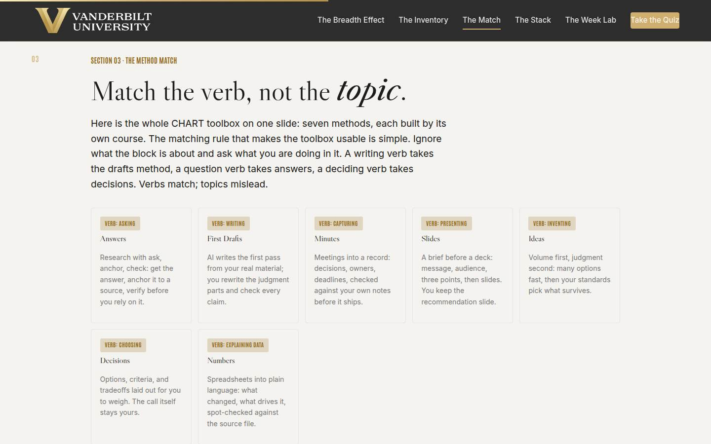
03 · The method match Full 12 min · Core 9
Put the whole AI-enabled Education Series toolbox on one visible surface and install the matching rule (match the block's verb, never its topic), then drill it on real week-blocks. Also the section that names the sibling courses and the Course Library.
Say
“Here is the whole AI-enabled Education Series toolbox on one slide: seven methods, one course each. And here is the rule that makes it usable: match the verb, not the topic. Ignore what the block is about and ask what you are DOING in it. Writing a status update is a writing verb, so the drafts method. Working out what the policy allows is an asking verb, so answers. A meeting that produces decisions nobody remembers is a capturing verb, so minutes. The topic will mislead you; a budget block might be writing, presenting, or explaining, and each verb takes a different method. Every method here keeps its own check, and every one is its own course in the Course Library. You do not need all seven; you need the two or three whose verbs dominate the inventory you just wrote.”
Do
- Walk the seven toolbox cards fast, verb first: asking is Answers, writing is First Drafts, capturing is Minutes, presenting is Slides, inventing is Ideas, choosing is Decisions, explaining data is Numbers. Fill the verbs on your whiteboard skeleton as you go.
- Land the matching rule with the budget example: the same topic can be a writing block, a presenting block, or an explaining block, and each takes a different method.
- Ask for a show of hands per method: who has taken this course? Map the room's coverage out loud, and point at the Course Library for the gaps.
- Send them to Match the Method: five blocks, verb first, then method.
- Run the quick check (the verb rule), then the pair swap from Go deeper: match your partner's inventory, saying the verb out loud before each method.
Ask
“From the swap: where did you and your partner disagree on a match, and what was the disagreement actually about?”
Expect:
- The block held two verbs and each partner saw a different one
- A topic-match argued against a verb-match ('it's a data thing!')
- One partner reached for the only method they knew
Respond: Name each pattern: 'Two verbs in one block is not a problem; it's a preview of the next section, and that block is your stack. Topic versus verb: run the budget test again. And matching to the one method you know is honest; the map is allowed to start there, and the library fills the rest when the map asks for it.'
Debrief: Every block in your inventory now has a verb and a method. And the blocks that would not settle on one verb are exactly the ones the next section wants.
Validate: 4+ of 5 on the trainer for most of the room; every learner's three inventory blocks have a method attached; the room can state the verb rule unprompted.
Watch for: Topic-matching relapse ('it's about data, so numbers') and tool questions ('but which AI does minutes?'). For the first, re-ask the verb question. For the second, stay tool-agnostic: every method runs in the approved VU tools, and the method survives any tool swap.
Transition: “Because the biggest savings in your week are hiding in the blocks with two verbs.”
Core path: Core: toolbox cards and verb rule at full strength, trainer on devices; the pair swap becomes a solo pass on your own three blocks with the verb said under your breath.
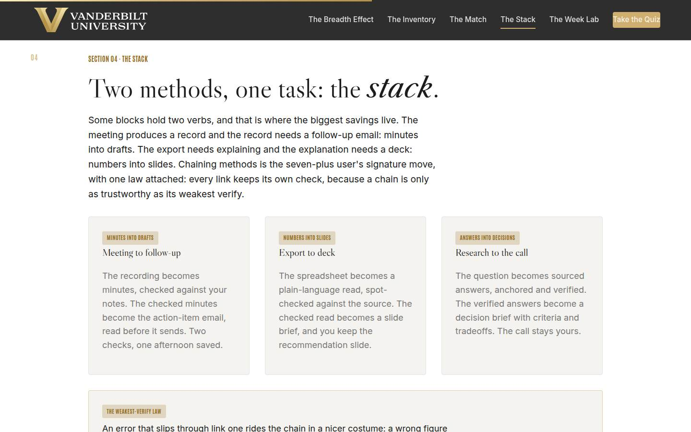
04 · The stack Full 11 min · Core 7
Install stacking (two methods chained on one task) as the seven-plus user's signature move, governed by the weakest-verify law: every link keeps its own check.
Say
“Some of your blocks would not settle on one verb, and those are the valuable ones. The meeting produces a record AND the record needs a follow-up: that's minutes into drafts. The export needs explaining AND the explanation needs a deck: numbers into slides. The question needs research AND the research feeds a choice: answers into a decision brief. Chaining two methods on one task is the move that separates the seven-plus user from the one-trick user, and it comes with one law. Every link keeps its own check, because a chain is only as trustworthy as its weakest verify. A wrong figure that slips through the minutes doesn't stay a minutes problem; it arrives in the follow-up email wearing better clothes. Check link one before it feeds link two. The check is minutes, not hours. Skipped is the only wrong size.”
Do
- Walk the three stack cards: minutes into drafts, numbers into slides, answers into a decision brief. Name the order rule: the chain follows the flow of the work.
- Land the weakest-verify law on the gold card: an error that slips link one rides the chain in a nicer costume, so check the output of link one before it feeds link two.
- Say the budget version out loud: the between-links check is minutes, not hours: three figures traced, a decision list read against your notes.
- Send them to Build the Chain: five tasks, pick the stack.
- Run the pair drill from Go deeper: build your heaviest block's stack out loud, then stress-test with 'which check would you skip on a busy Thursday?'
Ask
“From the drill: which check in your stack would you actually skip on a busy Thursday, and what would it cost you a week later?”
Expect:
- The between-links check, almost universally
- A specific horror story from someone's real past
- An honest 'I'd skip both and hope'
Respond: Use the horror story if one appears; it teaches better than the slide. Then land the move: 'Whatever check you'd skip, that's the one you write into the calendar note next to the block. The map remembers so Thursday doesn't have to.'
Debrief: Two methods, one task, a check at every link. Your heaviest block now has a stack design, which means you've done on paper what the lab is about to make you do under pressure.
Validate: 4+ of 5 on the trainer; pair stacks name both methods, both checks, and the check most tempting to skip; the room can recite the weakest-verify law.
Watch for: Chain inflation: learners excitedly designing four-link pipelines. Hold the line on two links for the first month; every added link multiplies how far an unverified claim can travel. Also the learner who treats the between-links check as optional polish; the lab is about to make that expensive, so you can let it teach.
Transition: “Enough theory. Someone's week needs planning.”
Core path: Core: stack cards and the law at full strength, trainer on devices; the pair drill becomes a solo four-line stack for your own heaviest block.
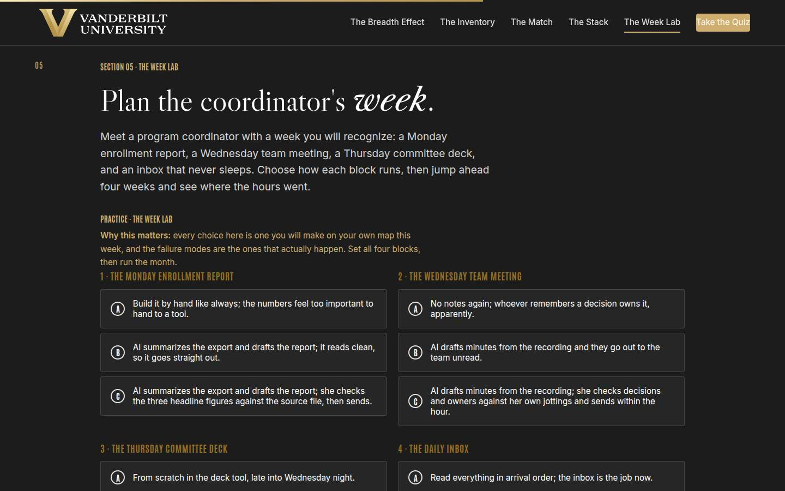
05 · The Week Lab Full 14 min · Core 10
Give every learner a full felt rep of the method: four blocks of a recognizable week, one design choice each, and a four-week outcome that rewards checks and banking over raw AI enthusiasm. The session's deepest practice block.
Say
“Meet a program coordinator whose week you will recognize. Monday, the enrollment report: an export and a write-up that eats the morning. Wednesday, the team meeting that produces decisions nobody remembers. Thursday, the committee deck. And underneath it all, the inbox. You're going to plan her week: for each block, pick how it runs. Then the lab jumps four weeks ahead and shows you where the hours went. One warning from everything we've done today: the lab never punishes you for using AI on too many blocks. Watch what it actually punishes.”
Do
- Set the scenario in one breath: a program coordinator, a Monday enrollment report, a Wednesday meeting, a Thursday deck, a daily inbox. Plan her week.
- Send them into the lab on devices: choose how each block runs, then run the month.
- Let people get their four-week outcome individually; the mid and weak tiers teach more than the strong one, so don't coach choices in advance.
- Ask for a show of hands by tier: who got the strong week, who hit week-three trouble. Have one mid-or-weak learner read their coaching aloud; the room learns from the postmortem.
- Push the rerun: strengthen your weakest block and run the month again. The delta between runs is the lesson.
- Then the pair translation from Go deeper: which coordinator block looks most like YOUR week, and which option do you honestly run today?
Ask
“For those in the mid or weak tier: which single choice cost you the month, and would you honestly have made a different one before today?”
Expect:
- The unchecked report or the unread minutes: 'it read fine'
- The auto-reply: it felt efficient right up until the incident
- An honest 'that IS how I run my real inbox'
Respond: Treat that last answer as the room's win: 'That recognition is the whole lab. The weak options aren't hypothetical; they're descriptions of unmanaged habits. And you now know the two fixes that turn the same methods into the strong week: a check at every link, and a name on the savings.'
Debrief: Same methods, opposite months, and the difference was never the AI. Checks on the links and names on the hours: that's the whole gap between the strong week and the incident report.
Validate: Every learner completes at least one lab run; most reach the strong tier on a rerun; every learner can name which coordinator block maps to their own week and what the upgrade is.
Watch for: Learners who game the lab by picking the maximal option everywhere without reading the coaching. The question that re-engages them: 'which of these choices would you actually sustain in week three, and which check would really survive your Thursday?' Also watch clock discipline; this section has the least slack.
Transition: “Which leaves the move that protects everything you just gained. It's the one almost everyone skips.”
Core path: Core: one lab run instead of run-plus-rerun (rerun only for learners who hit weak tier), tier hands stay, the pair translation becomes a solo one-line answer. This is the floor; never cut the lab entirely.
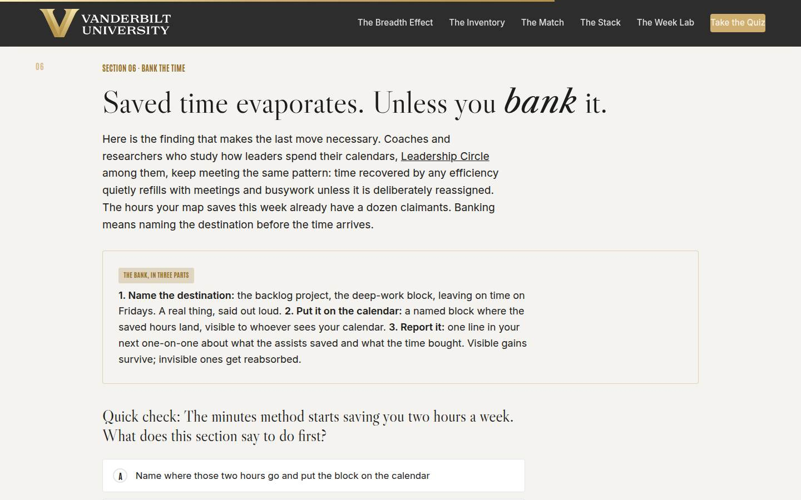
06 · Bank the time Full 10 min · Core 6
Install the bank (name the destination, block it on the calendar, report one line) as the counter-move to evaporation, using the recovered-time finding: saved hours refill with meetings and busywork unless deliberately reassigned.
Say
“Here's the move that decides whether any of today survives contact with your calendar. The people who study how leaders actually spend recovered time keep finding the same thing: it evaporates. The saved hours refill with meetings and small busywork so smoothly that a month later nobody can say where they went. So the last step of the Week Map is the bank, and it has three parts. Name the destination: the backlog project, the deep-work block, leaving on time on Fridays. A real thing, said out loud. Put it on the calendar as a named block, where people can see it. And report it: one line in your next one-on-one, what the assists saved and what the time bought. And hear this part clearly: leaving on time is a legitimate bank. The hours you recover do not owe anyone more output. They owe a destination.”
Do
- Land the finding first: recovered time evaporates by default; the calendar refills it so smoothly nobody notices it was saved. Credit the calendar research plainly and without invented numbers.
- Walk the bank card: name the destination, put the block on the calendar, report one line on what the time bought.
- Say the permission slip out loud: leaving on time is a legitimate bank; recovered hours owe a destination, not more output.
- Run the quick check, then send them to Judge the Bank: five accounts, call each one banked, evaporated, or busywork.
- Run the bank-line drill from Go deeper: one written line each, read to a partner, with the partner's question: 'when will I see that on your calendar?'
Ask
“What is YOUR bank line? The first hours your map saves go where, specifically?”
Expect:
- The postponed block from their inventory, which is the designed answer
- A deep-work or focus block with a real name
- Someone brave says 'home at five on Fridays' and watches your face
Respond: Bless the brave one first: 'That's a real bank, and saying it out loud in a work session took more nerve than the backlog answer. All three of those survive IF they get a calendar block and a witness. Unnamed versions of all three evaporate.'
Debrief: Name it, block it, report it. The bank is what turns six quiet saved hours into evidence, and evidence is what turns one person's practice into a team's.
Validate: 4+ of 5 on the trainer; every learner has a written bank line naming a specific destination; the room can say the three parts of the bank unprompted.
Watch for: Two drifts: performative banks ('world peace, eventually') that name nothing schedulable, and guilt banks where learners feel obligated to promise more output. Correct the second explicitly with the leaving-on-time line; a course that converts saved hours into pressure has taught the wrong thing.
Transition: “That's the full method. Quiz first, then the map that leaves the room with you.”
Core path: Core: finding and bank card at full strength, quick check stays, trainer on devices; the bank-line drill shrinks to writing the line without the pair exchange.
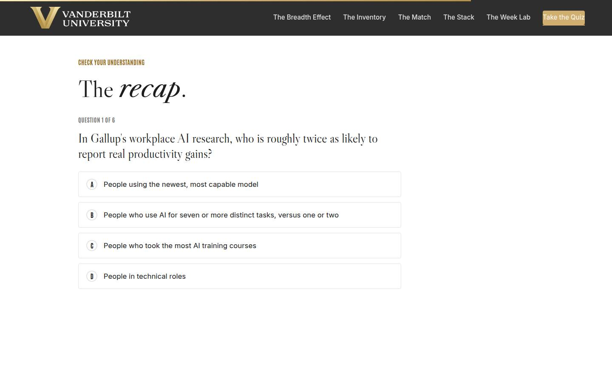
Recap quiz Full 4 min · Core 4
Score the session's knowledge against the five objectives before the capstone applies it (Kirkpatrick Level 2).
Say
“Six questions, one per big idea. This is the systems check before you build the map that leaves the room with you.”
Do
- Everyone takes it on their own device, all six questions.
- Ask for hands on 5-or-better; celebrate briefly.
- For any question the room visibly missed, do a 30-second reteach from the relevant slide, not a lecture.
Validate: Room mode at 5/6 or better. The quiz maps onto the objectives, so misses tell you exactly what to reteach.
Watch for: Racing. Frame it as the systems check before the map, not a race.
Transition: “Now the only part of today that changes next week.”
Core path: Core: keep at full length; this is the objectives' evidence.
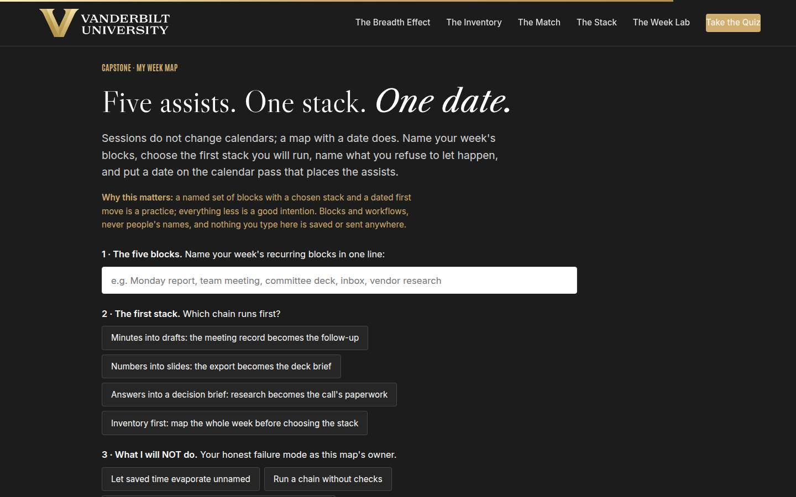
Capstone · My Week Map Full 6 min · Core 6
Convert the session into one dated commitment: five named blocks, one chosen first stack, one named failure mode to refuse, and a dated 30-minute calendar pass with the bank written in. The transfer artifact and the Level 3 seed.
Say
“Sessions don't change calendars. A map with a date does. Name your week's five blocks in one line, the real ones from your inventory. Choose your first stack, or choose 'inventory first' honestly if your week needs the full pass before you commit. Then the honest field: what you will NOT do, because you know your failure mode; letting saved time evaporate, running a chain without checks, or letting a deadline push people data into unapproved tools. And the date: when is the 30-minute calendar pass? Five named blocks with a chosen stack and a dated first move is a practice. Everything less is a good intention.”
Do
- Frame it: sessions don't change calendars; a map with a date does.
- Repeat the privacy norm before anyone types: blocks and workflows, nothing saved or sent.
- Give quiet time; this is individual work. Circulate for stuck learners: the three inventory blocks from section 02 are the raw material, and 'inventory first' is a legitimate stack choice.
- Point at field 3, what you will NOT do, as the honest one: every person in the room has one of these three failure modes.
- Push the build moment, then the copy button, then the close-the-loop line: after two weeks, one line of evidence, what ran, what it saved, what the bank bought.
Ask
“What's most likely to make you skip the calendar pass, and what's your plan for that obstacle?”
Expect:
- No time; the week will eat it
- Not sure the methods are strong enough yet
- Honest doubt the habit will survive week three
Respond: No time: 'It's 30 minutes against a heaviest block that eats hours weekly; the math forgives you exactly once.' Thin methods: 'Then the pass is where you find out which course to take, and two methods is a real map.' Week three: 'That's what the bank block is for; a visible gain defends itself, and the 7-day pulse is me checking on you.'
Debrief: Five blocks, one stack, one refusal, one date, and a bank with a name. That's the whole course in six rows, and it fits on one screen you can copy.
Validate: Every learner builds a map (all four fields) and sees the built card with its bank row. The map plus the 7-day pulse plus the 30-day re-poll is the evidence chain.
Watch for: Grand maps ('transform how I work entirely') and date-dodging. Push to five real blocks and an actual day for the calendar pass; 'soon' is not a date. Also learners skipping the bank row mentally; ask them to say their bank destination as they build.
Transition: “Reference shelf in one breath, and then the send-off.”
Core path: Core: protect at full length; never cut the capstone.
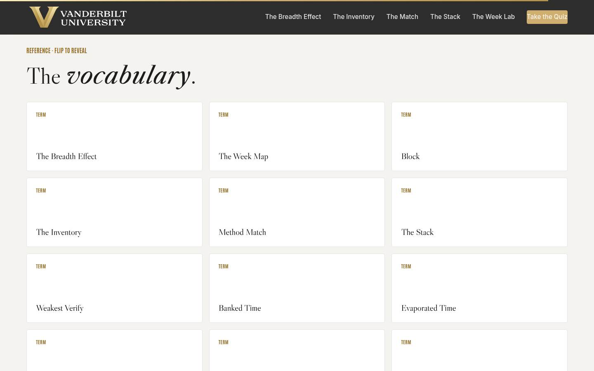
Glossary Full 1 min · Core skip
Signpost the reference layer; it lives here for after the session.
Say
“Every term from today lives here as flip cards, including 'evaporated time,' for the next month when someone asks where all that AI efficiency went.”
Do
- Flip one card on the projector (Evaporated Time is a good pick; it gets a knowing laugh and reteaches section 06).
- Tell them it's all here whenever they need the vocabulary back.
Validate: None; reference material.
Watch for: Don't tour all twelve cards; one flip makes the point.
Transition: “Last slide. One calendar pass left.”
Core path: Core: skip; point at it verbally from the closing slide.
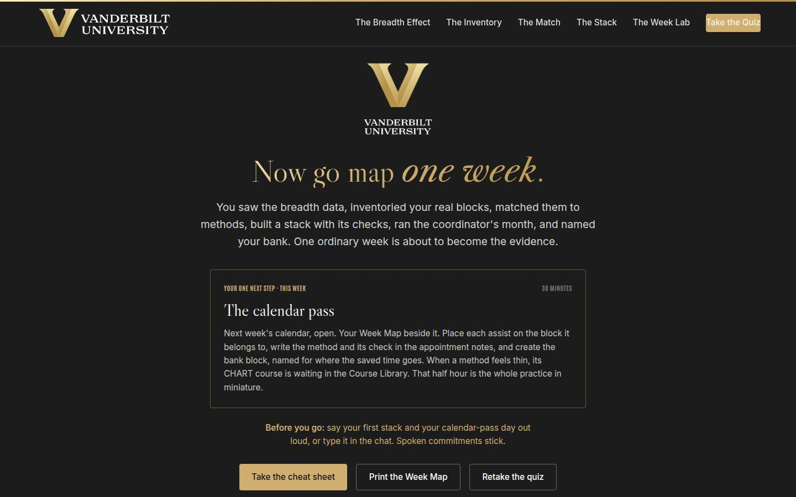
Closing · commitment Full 4 min · Core 1
Convert maps into spoken commitments, capture the Level 1 reaction check, and point at the follow-up chain.
Say
“The whole session in one breath: the data says breadth is the multiplier, the inventory makes your week visible, the verb rule matches the methods, the stack chains them with a check at every link, the lab showed you week three, and the bank is how the gains survive. You have a map. Before you go: your first stack, and your calendar-pass day. Say it out loud; spoken commitments stick.”
Do
- Read the featured card: the one next step is the 30-minute calendar pass, this week, next week's calendar open, assists placed with their checks, bank block created.
- Run the fist-to-five (Level 1): 'On a fist to five, how confident are you that you can run five checked assists across next week?' Scan and note the number; the 30-day re-poll asks it again.
- Run the commitment round, popcorn style: first stack and calendar-pass day, out loud or in chat.
- Point at the cheat sheet and Week Map buttons; the cheat sheet is built to sit next to the calendar during the pass.
- Tell them the 7-day pulse is coming, then land the last line and stop on time.
Ask
“Around the room, one line each: your first stack, and your calendar-pass day.”
Expect:
- 'Minutes into drafts, and the pass is Thursday'
- 'Numbers into slides for the Monday report, pass tomorrow'
- Someone commits to the full inventory first, honestly
Respond: Thank each one, no commentary. For the inventory-first answer, warmly: 'Good instinct. Two minutes with last week's calendar and the stack will pick itself; the pass is where it happens.'
Debrief: The session's success metric isn't in this room; it's the 7-day pulse: how many calendar passes actually ran, how many assists got placed, and how many bank blocks exist with names on them.
Validate: Fist-to-five mostly 3+ (Level 1); a majority state a stack and a day out loud or in chat. Count both; with the pulse and the 30-day re-poll, that's your evidence chain.
Watch for: Maps that quietly skipped the date. The commitment round catches them: no day, no commitment; help them pick one on the spot.
Transition: “Go book the calendar pass. And when the first banked hours show up on your calendar with a name on them, that block is the sound of the practice starting.”
Core path: Core: fist-to-five plus a fast commitment round; the ending survives every cut.
Generated from facilitator/notes.json. The on-screen facilitator edition lives at ./ alongside this guide.